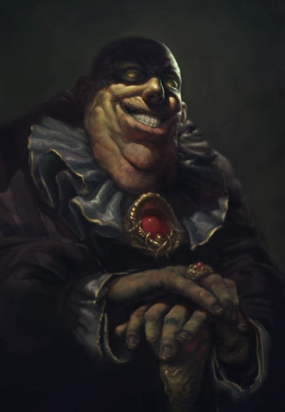

👑 Reino Central
O coração de Zarton. Onde poder, ambição e destino se cruzam.

📜 Sobre o Reino
O coração de Zarton. Um vasto território onde diferentes povos, culturas e ambições se encontram. Governado por uma monarquia humana, o Reino Central é o maior e mais influente do continente, servindo como centro político, econômico e social. Suas cidades vão desde centros luxuosos de poder até regiões marcadas por corrupção e desigualdade. No centro de tudo está Valkyria, a capital — uma cidade grandiosa onde oportunidades são tão abundantes quanto os perigos. Aqui, qualquer um pode construir um nome… ou se perder tentando.
🏛️ Política
O Reino Central é governado por uma monarquia humana, onde o rei detém a autoridade máxima, mas divide responsabilidades com lordes que administram diferentes regiões. Cada cidade possui certa autonomia, o que cria um equilíbrio entre ordem e interesses locais. Enquanto a capital mantém a estabilidade do reino, disputas políticas e jogos de influência acontecem nos bastidores.
📍 Locais Importantes
- • Valkyria — A capital do reino e maior cidade do continente. Centro político, econômico e cultural, onde tudo acontece.
- • Sombra Alta — Conhecida pela corrupção e pelo mercado negro. Um lugar onde praticamente tudo pode ser encontrado… pelo preço certo.
- • Luminor — Cidade da elite e dos cavaleiros. Berço dos maiores guerreiros do reino e símbolo de honra e tradição.
- • Karvon — Centro da forja e da metalurgia. Lar dos melhores ferreiros do continente, incluindo mestres anões.
👥 Personagens Importantes

👑 Aldric Lúmino
Rei do Reino Central
Recém-coroado aos 16 anos, Aldric Valenor ascendeu ao trono antes do tempo, após a morte de seu pai em circunstâncias envoltas em mistério. De um dia para o outro, deixou de ser herdeiro… para se tornar o homem mais poderoso do continente.
Jovem e ainda inexperiente, carrega o peso de um reino que nunca para de se mover. Nobres observam, aliados testam seus limites e inimigos aguardam qualquer sinal de fraqueza. Ainda assim, Aldric se recusa a ser apenas uma peça no jogo político.
Por trás de sua aparência frágil existe uma mente curiosa e um senso de justiça incomum — qualidades que podem torná-lo um grande rei… ou levá-lo à ruína.

⚔️ Sir Garrick Thorne
Capitão da Guarda Real
Um veterano de incontáveis batalhas, Garrick é uma lenda viva do reino. Antigo governador de Luminor, participou da derrota de uma criatura colossal que ameaçava o mundo décadas atrás.
Atendendo ao último pedido do antigo rei, abandonou seu cargo para proteger e orientar o jovem Aldric. Rígido e disciplinado, coloca o dever acima de tudo — inclusive da própria vida.
Há um cansaço silencioso em seu olhar… como alguém que já viu coisas demais.

🕶️ Vex
Senhor do Submundo
Vex é um nome sussurrado nas sombras do Reino Central. Um homem envelhecido, mas longe de fraco, ele comanda o submundo — controlando o mercado negro, informações ilegais e operações invisíveis aos olhos comuns.
Frio, calculista e extremamente inteligente, raramente se expõe. Prefere agir através de contatos, dívidas e segredos bem guardados.
Dizem que nada acontece na cidade sem que ele saiba… e que até os mais poderosos já estiveram em suas mãos.
Rumor: Possui ligação com o Lord de Sombra Alta.